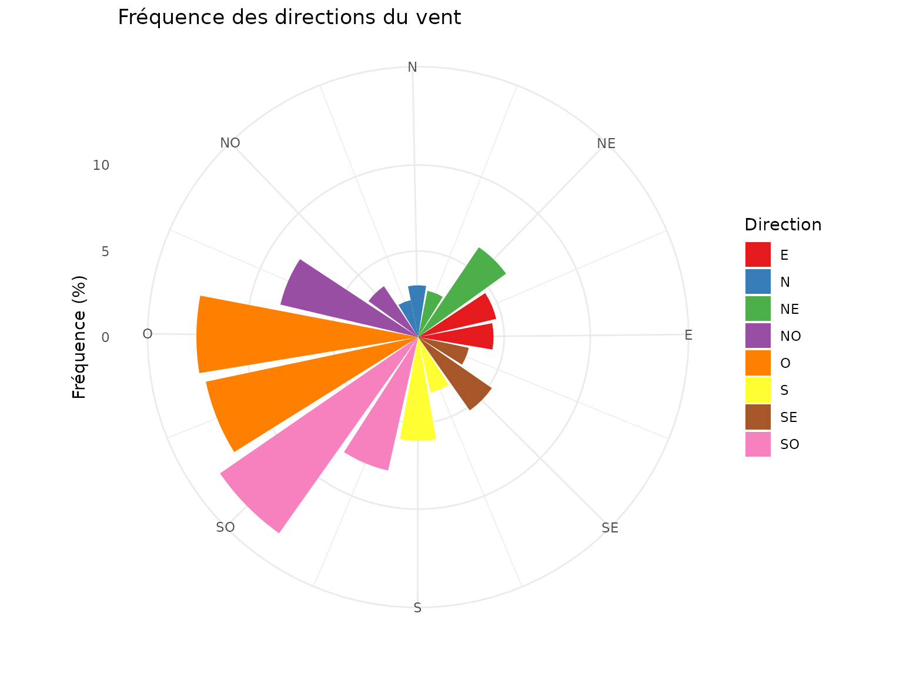
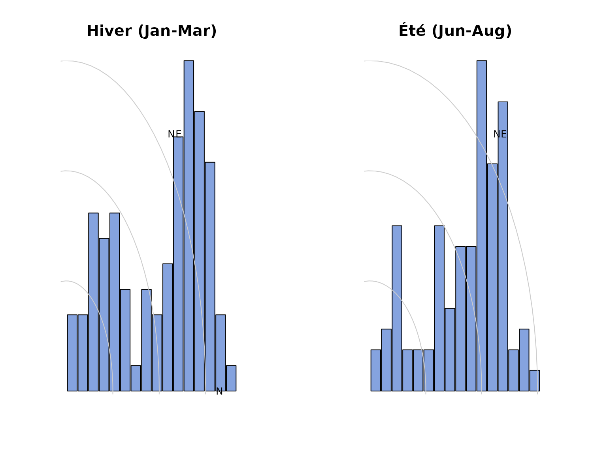

Introduction
L’analyse du vent est cruciale pour: - Planifier l’implantation de haies brise-vent - Estimer l’ombrage des cultures - Optimiser le drainage et la circulation de l’air - Prévoir les risques de renversement des cultures
Le package covariablechamps fournit des outils pour
obtenir et visualiser les données de vent depuis NASA
POWER.
Chargement du champ M2
Le package inclut un champ d’exemple (M2) situé au
Québec.
champ <- st_read(system.file("extdata", "M2.shp", package = "covariablechamps"))
#> Reading layer `M2' from data source
#> `/home/runner/work/_temp/Library/covariablechamps/extdata/M2.shp'
#> using driver `ESRI Shapefile'
#> Simple feature collection with 1 feature and 65 fields
#> Geometry type: POLYGON
#> Dimension: XY
#> Bounding box: xmin: -71.06012 ymin: 46.64605 xmax: -71.05268 ymax: 46.65118
#> Geodetic CRS: WGS 84
ggplot() +
geom_sf(data = champ, fill = "lightgreen", alpha = 0.5) +
theme_minimal() +
labs(title = "Champ M2",
subtitle = "Champ d'exemple inclus dans le package")
Obtention des données de vent depuis NASA POWER
La fonction obtenir_rose_vents() récupère les données de
rose des vents depuis l’API NASA POWER.
Note: Nécessite une connexion internet.
rose <- obtenir_rose_vents(
polygone = champ,
date_debut = "20230101",
date_fin = "20231231",
hauteur = "10m"
)
cat("Données obtenues pour:", rose$coordonnees[1], ",", rose$coordonnees[2], "\n")
#> Données obtenues pour: -71.05644 , 46.64874
cat("Directions analysées:", length(rose$directions), "\n")
#> Directions analysées: 16Direction dominante
direction_dom <- rose$directions[which.max(rose$wd_pct)]
freq_max <- max(rose$wd_pct, na.rm = TRUE)
cat(sprintf("Direction dominante: %.0f° (%.1f%% des vents)\n",
direction_dom, freq_max))
#> Direction dominante: 225° (14.0% des vents)
cat("\nOrientation:\n")
#>
#> Orientation:
cat(" 0° = Nord\n")
#> 0° = Nord
cat(" 90° = Est\n")
#> 90° = Est
cat(" 180° = Sud\n")
#> 180° = Sud
cat(" 270° = Ouest\n")
#> 270° = OuestDistribution des directions
df_rose <- data.frame(
direction = rose$directions,
frequence = rose$wd_pct
) |>
mutate(
direction_cardinale = case_when(
direction >= 337.5 | direction < 22.5 ~ "N",
direction >= 22.5 & direction < 67.5 ~ "NE",
direction >= 67.5 & direction < 112.5 ~ "E",
direction >= 112.5 & direction < 157.5 ~ "SE",
direction >= 157.5 & direction < 202.5 ~ "S",
direction >= 202.5 & direction < 247.5 ~ "SO",
direction >= 247.5 & direction < 292.5 ~ "O",
direction >= 292.5 & direction < 337.5 ~ "NO"
)
)
ggplot(df_rose, aes(x = direction, y = frequence, fill = direction_cardinale)) +
geom_col(width = 20) +
scale_fill_brewer(palette = "Set1") +
coord_polar(theta = "x", start = -11.25 * pi / 180) +
scale_x_continuous(breaks = seq(0, 337.5, by = 45),
labels = c("N", "NE", "E", "SE", "S", "SO", "O", "NO")) +
theme_minimal() +
labs(title = "Fréquence des directions du vent",
x = "", y = "Fréquence (%)", fill = "Direction")
Comparaison saisonnière
# Hiver (décembre-février)
rose_hiver <- obtenir_rose_vents(
polygone = champ,
date_debut = "20230101",
date_fin = "20230331",
hauteur = "10m"
)
# Été (juin-août)
rose_ete <- obtenir_rose_vents(
polygone = champ,
date_debut = "20230601",
date_fin = "20230831",
hauteur = "10m"
)
par(mfrow = c(1, 2), mar = c(4, 4, 4, 4))
# Fonction pour tracer une rose simple
plot_rose_simple <- function(rose_data, main) {
freqs <- rose_data$wd_pct
angles <- (rose_data$directions - 90) * pi / 180
freqs[is.na(freqs)] <- 0
barplot(freqs, axes = FALSE, axisnames = FALSE,
width = rep(1, length(freqs)), space = 0.1,
col = rgb(0.2, 0.4, 0.8, 0.6),
main = main)
r_max <- max(freqs, na.rm = TRUE)
for (i in seq(0, r_max, length.out = 4)) {
angle_seq <- seq(0, 2 * pi, length.out = 100)
lines(i * cos(angle_seq), i * sin(angle_seq), col = "grey80")
}
dir_labels <- c("N", "NE", "E", "SE", "S", "SO", "O", "NO")
angles_labels <- seq(0, 7) * pi / 4
text(r_max * 1.1 * cos(angles_labels),
r_max * 1.1 * sin(angles_labels),
dir_labels, cex = 0.8)
}
plot_rose_simple(rose_hiver, "Hiver (Jan-Mar)")
plot_rose_simple(rose_ete, "Été (Jun-Aug)")
Applications agricoles
Références
- NASA POWER - Données météorologiques mondiales